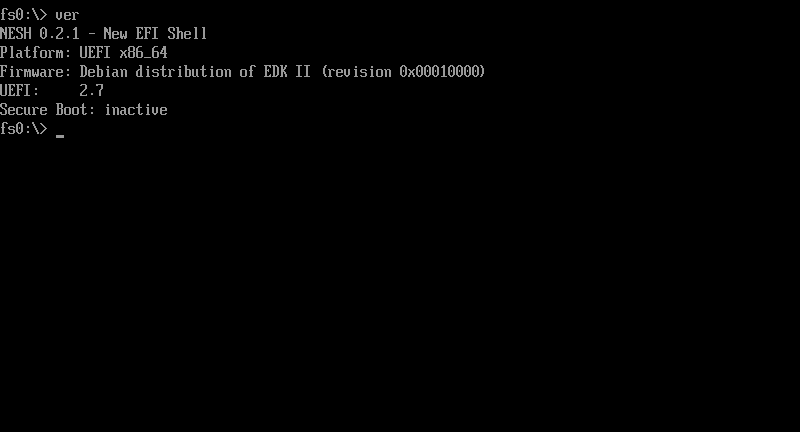

A modern command shell for UEFI firmware, in one file, with a BASIC-style scripting language and the UEFI Shell command set rewritten from scratch.

ver, map, the example scripts, and a menu written in
NESH BASIC listing the firmware boot entries.Using NESH and writing scripts: every command and function, with examples and an interactive boot menu.
Architecture, build, internals, testing and how to extend NESH.
Why NESH is the way it is: the design decisions and the history of the project.
The repository on GitHub.